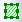

Nach dem Import einer NetCDF-Datei in den Matrixstapel können Sie die Matrixdaten bearbeiten.
Im Folgenden sehen Sie einige Beispiele zur Verwendung dieser Hilfsmittel auf NetCDF-Daten.
Wählen Sie Analyse: Lineare Anpassung für Matrixstapel, um den Dialog zu öffnen. Führen Sie eine lineare Anpassung für den NetCDF-Matrixstapel durch.
Wählen Sie Analyse: Deskriptive Statistik, um den Dialog zu öffnen und die deskriptive Statistik (Mittelwert, Standardabweichung, Minimum, Maximum, Median und Summe) für den Matrixstapel zu erhalten.
Wählen Sie Analyse: Mathematik: Subtrahieren, um den Dialog zu öffnen, und subtrahieren Sie zwei Matrixstapel der gleichen Größe, um die Differenz zwischen diesen beiden zu erhalten.
In der folgenden Abbildung erhalten wir den Mittelwert der Matrix und führen dann die Subtraktion mit den Mittelwerten der zwei Matrizen, um die Differenz zu berechnen.

Anwenderbericht:
Wählen Sie Matrix: Pixelextraktion, um den Dialog zu öffnen, und extrahieren Sie den Z-Wert für festgelegte XY-Koordinaten für alle Matrizen in einem Matrixstapel.
Zum Festlegen des XY-Koordinatenwertes können Sie:
oder
oder
Wählen Sie Matrix: Größe ändern, um den Dialog msresize zu öffnen. Wählen Sie Interpolieren unter Option Größe ändern, um ausführlichere Informationen aus den NC-Dateien zu erhalten.
Wenn eine Matrix im Bildmodus ist, können Sie mit dem Hilfsmittel Rechteck/Kreis/Polygon/Region 
Klicken Sie mit der rechten Maustaste auf Ihr ROI und wählen Sie im Kontextmenü eine Option. Um die ROI zu verwerfen, drücken Sie Entfernen.
Um mehrere ROIs hinzuzufügen:
Jedes ROI wird mit einem Standardnamen hinzugefügt (z. B. ROI). Sie können mehrere ROIs zu Ihrem Matrixbild hinzufügen, müssen aber jedes ROI umbenennen, bevor Sie ein weiteres hinzufügen können.
Wenn Sie in die Matrix zoomen und der ROI-Bereich dadurch aus der Ansicht gescrollt wurde, können Sie den ROI in der Objektverwaltung finden (standardmäßig oben rechts verankert). Klicken Sie auf ihn und wählen Sie Scrollen zu, um den ROI sofort zurück ins Zentrum zu rücken. |
Kopieren Sie die ausgewählte Position der ROI (grafischen Datenauswahl). Fügen Sie dann die Position der ausgewählten ROI in eine andere ROI ein (Breite, Höhe, ... alles).
Speichern Sie die ROI-Objekte.
Ersetzen Sie das/die Objekt(e) mit denen in einer gespeicherten .ROI-Datei (Hinweis: Erstellen Sie eine "Dummy"-ROI zum Importieren).

Klicken Sie mit der rechten Maustaste in die Matrix oder auf ein ROI-Feld, wählen Sie ROI aus XY erstellen und verwenden Sie dann den Dialog xy2roi, um die XY-Grenze und die Indexdaten aus dem Arbeitsblatt zum Definieren des ROI-Felds zu wählen. Optional legen Sie den ROI-Namen und die Gruppeninfo fest.
Das Bild unten zeigt zum Beispiel, wie eine Shapefile-Grenze zum Erstellen eines ROI-Felds verwendet wird.

Verwenden Sie das Hilfsmittel mroi2mat, um eine neue Matrix aus der ROI zu erzeugen.

Verwenden Sie das Hilfsmittel mroi2XYZ, um ein neues Arbeitsblatt mit XYZ-Werten in der ROI zu erzeugen.
Klicken Sie mit der rechten Maustaste auf das ROI-Feld und wählen Sie Intensitätsprofil. Verwenden Sie dann den Dialog mroiprofile, um die Deskriptive Statistik ( Mittelwert, StdAbw., Min., Max., Median, Summe etc.) für das ROI-Feld zu ermitteln. Das Kontrollkästchen Gewichtetes ROI wendet eine Gewichtung auf die Pixel der Grenze an, wobei jeder Pixel (ein rechteckiger Punkt) durch die Fläche innerhalb des ROI-Polygon gewichtet wird. Dies verbessert die Genauigkeit, wenn die ROI-Koordinaten einen Pixel nicht vollständig abdecken.
Das Bild unten zeigt, wie das Intensitätsprofil auf einem ROI-Feld, das aus einem Shapefiles-Datensatz erstellt wurde, durchgeführt wird (ROI aus XY erstellen.
Ein Geschwindigkeitsproblem kann auftreten, wenn viele ROI-Felder existieren, Profil für = Alle ROIs in Matrix und Datenlayout = Matrix zeilenweise. Die Langsamkeit wird durch das Bewahren der Ausgabespalten der Berichtsdaten verursacht. In diesen Fällen wird die Ausgabe einfach aus allen ursprünglichen Spalten entfernt, falls die ursprüngliche Ausgabe eine größere Anzahl von Spalten als @RDRC besitzt. Es sollte jedoch beachtet werden, dass das Entfernen aller Ausgabespalten auch Zeichnungen beschädigt, die auf Grundlage der Ausgabe erstellt wurden. |
Fügen Sie ein ROI-Feld zur Matrix hinzu, klicken Sie mit der rechten Maustaste auf das ROI und wählen Sie Löschen.
Bei 4D-Matrixmappen (die 4. Dimension ist Blätter) wird das einzelne ROI übergreifend über mehrere Matrixblätter angezeigt. Das ROI wird im aktiven Blatt angezeigt.
Für dieses ROI werden die Hilfsmittel Neu erstellen, XYZ extrahieren und Intensitätsprofil unterstützt. Das Ergebnis des aktiven Matrixblatts wird erzeugt. Bei einem Wechsel der Blätter wird das Ergebnis für das aktive Blatt aktualisiert.